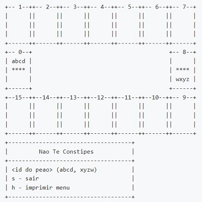

Minesweeper

Minesweeper meu primeiro jogo, foi um projeto feito na cadeira de fundamentos de Programação.
Saiba MaisNão te Constipes
Não Te Constipes é um jogo de tabuleiro para dois jogadores, em que cada jogador tem uma família de 4 pessoas: O jogador 1 é dono dos peões identificados pelas letras a, b, ce d. O jogador 2 é dono dos peões identificados pelas letras x, y, ze w. No início do jogo, os 4 peões de cada jogador estão na sua casa mãe, em lados opostos do tabuleiro. A cada jogo, o jogador lança os dados e escolhe apenas um dos seus peões para se movimentar. O peão escolhido, avançou o número de casas que saíram no lançamento dos dados. O objetivo de cada jogador é fazer com que todos os seus 4 jogadores completem uma volta ao tabuleiro. Ganha o primeiro jogador a alcançar esse feito. No entanto, se um peão for ultrapassado por um peão da outra família (peão do jogador oponente), fica constipado e tem de voltar para a sua casa mãe. O peão quando remetido em casa mãe deixa de ficar constipado e pode ser usado normalmente.
Saiba MaisDeisiflix
Objetivo: desenvolvimento de uma aplicação em linguagem Java que seja capaz de receber e responder a pedidos de estatísticas sobre uma base de dados de filmes.
Saiba MaisDeisi Jungle
Certo dia, numa savana muito (muito) longe daqui, os animais decidiram descobrir quem seria o melhor atleta entre eles. Para o fazer, definiram um conjunto de provas desportivas que iriam disputar entre si - quem vencesse mais provas seria considerado o Rei da Selva. Rapidamente a notícia chegou ao Tarzan, que não quis deixar de participar nas provas, convencido de que facilmente as venceria. A primeira prova a disputar é a prova de atletismo. Os animais vão-se reunir numa pista e competir para determinar qual o melhor atleta.
Saiba Mais